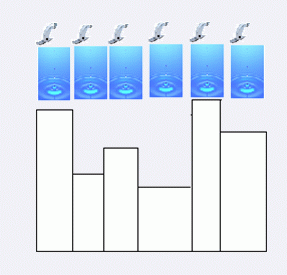
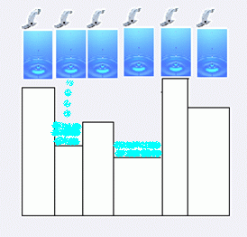
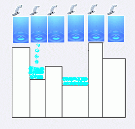

第一行两个数N，M。接下来N行，每行两个实数，分别表示宽度和高度。再接下来M行，每行两个实数，表示Wi、Vi。
一天，陈启峰在洗衣服的时候突发奇想，发明了一种音乐水栅。音乐水栅是这样子的：它的下部是N个长方体的音乐木块并列组成的。每个木块的长度都是1，而宽度可能各不相同。为了没有重复的音调，陈启峰使得任意两块的高度都不相同。水栅前后被两块极大的玻璃夹着。在每一个音乐木块的中央上都有一个水龙头。当把它开启后，水就会掉下来，与木块发生非弹性碰撞时发出轻脆、优雅、动听的声音。下图为正视图：  （1）当水流滴到一个没有水的木块上，就会分成相同的两部分往左右两个方向流去。比如在上图的第三块木块放水：  水由于重力都流到第二块和第四块上。（2）当水滴到水上，就会与水融为一体。譬如当水滴到第二块上，水积累到一定程度后，就会流到第四块木块上。现在陈启峰编写了一个音乐谱。该谱按时间前后顺序分成一个一个的M个命令，每一个命令都是“在第Wi个木块上注入体积为Vi的水”。但是陈启峰是一个不爱浪费的人，所有他想知道这音乐谱左边和右边各浪费了多少水。有必要的话，他可是要改谱哦。 
水由于重力都流到第二块和第四块上。（2）当水滴到水上，就会与水融为一体。譬如当水滴到第二块上，水积累到一定程度后，就会流到第四块木块上。现在陈启峰编写了一个音乐谱。该谱按时间前后顺序分成一个一个的M个命令，每一个命令都是“在第Wi个木块上注入体积为Vi的水”。但是陈启峰是一个不爱浪费的人，所有他想知道这音乐谱左边和右边各浪费了多少水。有必要的话，他可是要改谱哦。 
第一行两个数N，M。接下来N行，每行两个实数，分别表示宽度和高度。再接下来M行，每行两个实数，表示Wi、Vi。
第一行输出通过左边流出浪费的水的体积。第二行输出通过右边流出浪费的水的体积。保留3位小数。
6 2
1 5
1 3
1 4
2 2
1 6
1 4
5 7
3 6
0.500
3.500
数据范围：
100%的数据中N、M< = 1000000。